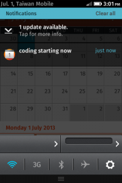

當使用者從 Firefox OS 手機收到一封新簡訊，在點下 Notification Bar 的簡訊通知後，預載的 SMS App 就會被啟動，但你知道在此過程中，預載的 SMS App 是如何切換到正確的簡訊串列來顯示簡訊內容的呢？
首先，使用 navigator.mozNotification.createNotification 可以在 Notification Bar 中加入一個 notification 通知。下面是建立一個 notification 通知的範例程式碼：
var title = " 886933123456";
var body = "Hello!";
var icon = "app://sms.gaiamobile.org/icon.png";
var notification = navigator.mozNotification.createNotification(title, body, icon);
1234
var title = " 886933123456";var body = "Hello!";var icon = "app://sms.gaiamobile.org/icon.png";var notification = navigator.mozNotification.createNotification(title, body, icon);
接下來，就是需要傳遞電話號碼參數給 SMS App，讓它知道要開啟哪個電話號碼的簡訊串。很可惜的，在使用 createNotification 函式建立 notification 時並沒有提供傳遞參數的機制。
讓我們來用 hacking 的方式來達成這個任務吧。我們可以在使用 createNotification 函式時，利用函式中的 iconURL 參數來傳遞電話號碼給 SMS App。iconURL 是一個圖示的 URL，它的值可能會是這樣：app://sms.gaiamobile.org/icon.png
而下面是 createNotification 函式的 Spec：
notification createNotification(
in DOMString title,
in DOMString description,
in DOMString iconURL Optional
);
12345
notification createNotification( in DOMString title, in DOMString description, in DOMString iconURL Optional );
接下來，在 iconURL 最後面先加入一個 ?，再把電話號碼放在 iconURL 參數的後面，像是這樣：
app://sms.gaiamobile.org/icon.png？ 886933123456
這樣在 SMS App 在接收到 notification 的 オンライン ブラックジャック system message 後，就可以在 navigator.mozSetMessageHandler 註冊的 callback 函式拿到電話號碼。下面是 SMS APP 接收電話號碼的範例程式碼：
navigator.mozSetMessageHandler("notification", function notificationClick(message) {
if (!message.clicked) {
return;
}
navigator.mozApps.getSelf().onsuccess = function(evt) {
var app = evt.target.result;
app.launch();
// Getting back the number form the icon URL
var notificationType = message.imageURL.split("?")[1];
// Case regular "sms-received"
if (notificationType == "sms-received") {
var number = message.imageURL.split("?")[2];
showThreadFromSystemMessage(number);
return;
}
var number = message.title;
// Class 0 message
var messageBody = number "\n" message.body;
alert(messageBody);
};
});
1234567891011121314151617181920212223
navigator.mozSetMessageHandler("notification", function notificationClick(message) { if (!message.clicked) { return; } navigator.mozApps.getSelf().onsuccess = function(evt) { var app = evt.target.result; app.launch(); // Getting back the number form the icon URL var notificationType = message.imageURL.split("?")[1]; // Case regular "sms-received" if (notificationType == "sms-received") { var number = message.imageURL.split("?")[2]; showThreadFromSystemMessage(number); return; } var number = message.title; // Class 0 message var messageBody = number "\n" message.body; alert(messageBody); };});
奇妙的事發生了，這樣就可以了，耶！
以上是一個 hacking 的做法，始終不是一個長久之計啊。我們來參考一下 W3C Web Notifications 的標準吧。大家可以看到有一個 tag 的參數，在 SMS App 的例子中，我們可以用它來傳遞電話號碼給 SMS App，像是這樣：
new Notification(
" 886933123456",
{
iconUrl: "app://sms.gaiamobile.org/icon.png",
body: "Hello!",
tag: "tel= 886933123456"
}
);
12345678
new Notification( " 886933123456", { iconUrl: "app://sms.gaiamobile.org/icon.png", body: "Hello!", tag: "tel= 886933123456" });
接下來，Firefox OS 當然會支援 Web Notifications 的標準（code 已經準備好了，就等 land 進去啦），之後我們就不用再這麼 hack 了。好，謝謝大家。:)
參考資料：